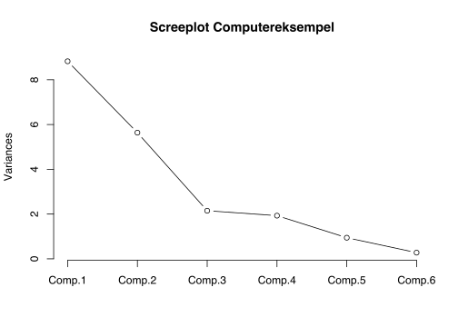
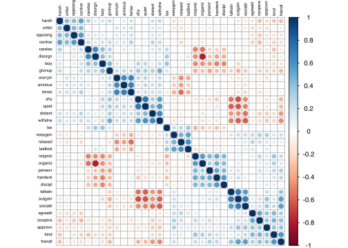

Kapitel 5 Faktoranalyse
Faktoranalyse FA er ligesom, klyngeanalyse vi ser på senere, en strukturanalyse, der belyser hvilke sammenhænge der er i et datasæt. FA er en statistikmodel der navnlig bruges til at forenkle tolkningen af et datamateriale, der indeholder en stor mængde variable. FA bygger på et kæmpe antal udregninger med udgangspunkt i korrelationskoefficienter og er i praksis nærmest umulig at gennemføre uden brug af computersoftware. Før computerens opfindelse kunne en faktoranalyse nemt lægge beslag på en halv snes statistikere på fuld tid gennem flere måneder. Resultatet ville være identifikation få faktorer, skjult i et datamateriale. Faktoranalysen kan fx. hjælpe med at vise sammenhænge mellem svar i spørgeskemaer, hvilket kan være en hjælp markedsføringsmæssigt at forstå hvilke svar samvarierer. En sådan gruppering af spørgsmål kan hjælpe med bedre at forstå kundernes ønsker og behov. Faktoranalyse FA er et godt værktøj til at forstå, hvad dine spørgeskemadata betyder, især når du har mange variable. Faktoranalysen forsøger at finde skjulte variable, som forklarer opførslen af dine observerede variabler. FA har historiske rødder i psykometri, dvs målingen af mentale egenskaber.
I modsætning hertil søger man med Klyngeanalysen at finde sammenhænge mellem respondenterne og altså ikke variablene, hvilket er et godt hjælpeværktøj i forbindelse med markedssegmentering.
Der findes 2 typer af FA Exploratory Factor Analysis (EFA) og Confirmatory Factor Analysis (CFA). EFA betyder, at du ikke rigtig ved, hvilke skjulte variable (eller faktorer) der findes, og hvor mange de er, så du forsøger at finde dem. CFA betyder, at du allerede har nogle gæt eller modeller på skjulte variable (eller faktorer), og vi vil kontrollere, om dette er korrekt. Vi benytter i det følgende EFA
5.1 Hvilke faktorer er vigtige når man køber en ny computer:
Lad os sige, man har indsamlet et spørgeskema for at undersøge hvad der er vigtigt, når en forbruger bestemmer, hvilken computer der skal købes. Spørge skemaet er udformet, som hvor vigtig er Pris for computerkøbet, vægt fra 1 til 7 hvor 7 er højest/vigtigst.
Dette datasæt er lille i forhold til hvad der er realistisk, da vi blot forsøger at illustrere analysen. Normalt vil man have mange variable og for at sikre en solid analyse flere respondenter.
Læs datasættet ind i R, dette kan du gøre ved at copy paste nedenstående direkte ind i R:
Pris <- c(6,7,6,5,7,6,5,6,3,1,2,5,2,3,1,2)
Software <- c(5,3,4,7,7,4,7,5,5,3,6,7,4,5,6,3)
Æstetik <- c(3,2,4,1,5,2,2,4,6,7,6,7,5,6,5,7)
Brand <- c(4,2,5,3,5,3,1,4,7,5,7,6,6,5,5,7)
Venner <- c(7,2,5,6,2,4,1,7,3,2,6,7,6,2,4,5)
Familie <- c(6,3,4,7,1,5,4,5,4,4,5,7,2,3,5,6)
data <- data.frame(Pris, Software, Æstetik, Brand, Venner, Familie)Nu skal vi undersøge om det er fornuftigt at foretage en faktoranalyse, dette kan vi undersøge ved enten Bartletts korrelationstest eller Kaiser-Meyer-Olkin KMO. For at teste dette skal man installere pakken psych, dette er kun første gang.
## R was not square, finding R from data## $chisq
## [1] 36.15696
##
## $p.value
## [1] 0.00167791
##
## $df
## [1] 15## Kaiser-Meyer-Olkin factor adequacy
## Call: KMO(r = data)
## Overall MSA = 0.49
## MSA for each item =
## Pris Software Æstetik Brand Venner Familie
## 0.71 0.70 0.57 0.49 0.30 0.37Nulhypotesen i Bartletts test er at variablene ikke er korrelerede, forkaster vi denne er der basis for at gennemføre faktoranalysen. Den lille p-værdi på 0.00167791, betyder vi gennemfører faktoranalysen.
For KMO skal Overall MSA = 0.49, fortæller om egnethed af data til faktoranalyse. Skal være større end kritisk grænse på ca. 0.5, dette er ikke helt tilfældet her, men vi gennemfører alligevel faktoranalysen.
Vi kan se af korrelationsmatricen, at nogle variable er korrellerede og andre tilsyneladende ikke.
## Pris Software Æstetik Brand Venner
## Pris 1.00000000 0.1856123 -0.63202219 -0.58026680 0.03082006
## Software 0.18561230 1.0000000 -0.14621516 -0.11858645 0.10096774
## Æstetik -0.63202219 -0.1462152 1.00000000 0.85285436 0.03989799
## Brand -0.58026680 -0.1185864 0.85285436 1.00000000 0.33316719
## Venner 0.03082006 0.1009677 0.03989799 0.33316719 1.00000000
## Familie -0.06183118 0.1765724 -0.06977360 0.02662389 0.60727189
## Familie
## Pris -0.06183118
## Software 0.17657236
## Æstetik -0.06977360
## Brand 0.02662389
## Venner 0.60727189
## Familie 1.00000000Så det ser ud til, at Pris har stærke negative sammenhænge med Æstetik og Brand, og Venner har en stærk positiv sammenhæng med Familie. Det betyder, at vi kan forvente, at vi vil have to fælles faktorer, og en vil være relateret til pris, æstetik og brand, og den anden vil være relateret til ven og familie. Vi kan lave et corrplot, der grafisk illustrerer disse sammenhænge, store blå prikker er positiv korrelation, store røde negativ korrelation.
# install.packages("corrplot")
library(corrplot)
corrplot(cor(data), order = "hclust", tl.col='black', tl.cex=.5) 
Vi kan også teste om der er grundlag for at sammenlægge variable til faktorer.
Lad os gå videre til Faktor analysen, og se hvad der vil ske.
Hvis vi samler alle spørgsmål til en samlet faktor, har vi følgende faktor analyse:
##
## Call:
## factanal(x = data, factors = 1)
##
## Uniquenesses:
## Pris Software Æstetik Brand Venner Familie
## 0.567 0.977 0.126 0.167 0.974 1.000
##
## Loadings:
## Factor1
## Pris -0.658
## Software -0.152
## Æstetik 0.935
## Brand 0.912
## Venner 0.161
## Familie
##
## Factor1
## SS loadings 2.190
## Proportion Var 0.365
##
## Test of the hypothesis that 1 factor is sufficient.
## The chi square statistic is 12.79 on 9 degrees of freedom.
## The p-value is 0.172Uniqueness angiver hvor meget af variationen i en variabel der ikke er associeret med faktoren. Jo lavere Uniqueness, des større sammenhæng til faktorerne.
Loadings angiver hvordan hver variabel er vægtet for faktorerne, men også hvor stærk korrelationen er til hver faktor. Faktor 1 påvirkes således mest af Æstetik, Brand og Pris. Denne faktor kan ses af corrplottet hvor disse tre variable ses at påvirke hinanden, Pris er negativt korreleret med Æstetik og Brand.
Proportion Var er et vigtigt nøgletal, der angiver andelen af variationen i data, der er forklaret af den pågældende faktor. Her forklares alså kun 36.5% af variationen i datasættet. Proportion Var findes som SS loadings divideret med antallet af variable dvs. her 6.
##
## Call:
## factanal(x = data, factors = 2)
##
## Uniquenesses:
## Pris Software Æstetik Brand Venner Familie
## 0.559 0.960 0.126 0.080 0.005 0.609
##
## Loadings:
## Factor1 Factor2
## Pris -0.657
## Software -0.161 0.119
## Æstetik 0.933
## Brand 0.928 0.242
## Venner 0.100 0.992
## Familie 0.620
##
## Factor1 Factor2
## SS loadings 2.207 1.453
## Proportion Var 0.368 0.242
## Cumulative Var 0.368 0.610
##
## Test of the hypothesis that 2 factors are sufficient.
## The chi square statistic is 2.16 on 4 degrees of freedom.
## The p-value is 0.706Cumulative Var 0.61 er summen af proportion var 0.368 og 0.242, og betyder at faktor 1 og faktor 2 forklarer 61% af variationen i datamaterialet.
Faktor 2 forklares altså primært af Venner og Familie, dette stemmer godt overens med billedet vi så i corrplot.
##
## Call:
## factanal(x = data, factors = 3)
##
## Uniquenesses:
## Pris Software Æstetik Brand Venner Familie
## 0.468 0.944 0.154 0.005 0.193 0.005
##
## Loadings:
## Factor1 Factor2 Factor3
## Pris -0.717 0.122
## Software -0.146 0.172
## Æstetik 0.908 -0.130
## Brand 0.892 -0.116 0.430
## Venner 0.440 0.781
## Familie 0.970 0.228
##
## Factor1 Factor2 Factor3
## SS loadings 2.161 1.198 0.872
## Proportion Var 0.360 0.200 0.145
## Cumulative Var 0.360 0.560 0.705
##
## The degrees of freedom for the model is 0 and the fit was 0.0188Nu forklares 70.5% af variationen i datamaterialet altså ud fra de 3 faktorer.
5.1.1 Hvor mange faktorer bør benyttes?
Der er ingen fast regel for hvor mange faktorer der bør benyttes. Der er flere forskelle metoder til bestemmelse af antallet af faktorer.
5.1.1.1 Metode 1 Eigenvalues
Vi kan se på Eigenvalues antallet af faktorer bestemmes af antallet af Eigenvalues større end 1, det er denne metode fx. SPSS benytter. Vi får her kun 2 faktorer, denne metode er ofte lidt konservativ, således at vi får færre faktorer end med de øvrige metoder. Eigenvalues udtrykker hvor meget af datamaterialets samlede varians, der dækkes af den pågældende faktor. Eigenvalues er standardiserede således at summen giver antallet af variable, herunder ses at summen er 6, da der er 6 variable i datasættet. Vi ser hvor stor en del af variationen hver faktor forklarer, når der er 6 faktorer. Faktor 5 og faktor 6 bibringer meget lidt yderligere forklaring af variationen.
## [1] 2.45701130 1.68900056 0.89157047 0.60583326 0.27285334 0.08373107## [1] 6## [1] 0.40950188 0.28150009 0.14859508 0.10097221 0.04547556 0.01395518Vi kan se på nedenstående screeplot, der hvor kurven flader ud, bibringer yderligere faktorer ikke synderlig megen yderligere forklaring til modellen. Man vil med screeplot kriteriet, vælge antallet af faktorer hvor kurven knækkker dvs. 3 faktorer.

5.1.1.2 Opgave
Hent nu filen personality, hvor 240 Stanford studerende har svaret på i hvor høj grad de mener at besidde 32 forskellige personlighedstræk. 1 til 8 hvor 1 er mindst og 8 er mest. Foretag hvis en test viser dette er fordelagtigt en faktoranalyse.
Download nedenstående fil og importer den via File - Import Dataset -
https://drive.google.com/file/d/0B1E7VnhxsDMlWG1aV2dvazRjclk/view?usp=sharing
## R was not square, finding R from data## $chisq
## [1] 4009.545
##
## $p.value
## [1] 0
##
## $df
## [1] 496## Kaiser-Meyer-Olkin factor adequacy
## Call: KMO(r = personality)
## Overall MSA = 0.84
## MSA for each item =
## distant talkatv carelss hardwrk anxious agreebl tense kind opposng
## 0.88 0.86 0.82 0.87 0.82 0.73 0.84 0.81 0.79
## relaxed disorgn outgoin approvn shy discipl harsh persevr friendl
## 0.86 0.75 0.87 0.89 0.87 0.84 0.85 0.86 0.87
## worryin respnsi contrar sociabl lazy coopera quiet organiz criticl
## 0.81 0.86 0.83 0.90 0.89 0.83 0.87 0.78 0.87
## lax laidbck withdrw givinup easygon
## 0.81 0.73 0.90 0.89 0.78Vi gennemfører klart analysen viser begge tests.
#cor(personality) korrelationsmatricen er udeladt af pladshensyn.
corrplot(cor(personality), order = "hclust", tl.col='black', tl.cex=.5) 

## [1] 7.2407068 4.5250901 3.1240573 2.3335890 1.8783611 1.1940636 0.9268636
## [8] 0.8553802 0.7968460 0.7128793 0.6936229 0.6396893 0.6277046 0.5399600
## [15] 0.5074253 0.4719721 0.4639916 0.4455816 0.4376430 0.4135706 0.3906941
## [22] 0.3696839 0.3273829 0.3014077 0.2940833 0.2800131 0.2522101 0.2349649
## [29] 0.2199461 0.2011492 0.1658493 0.1336176Vi benytter 8 faktorer